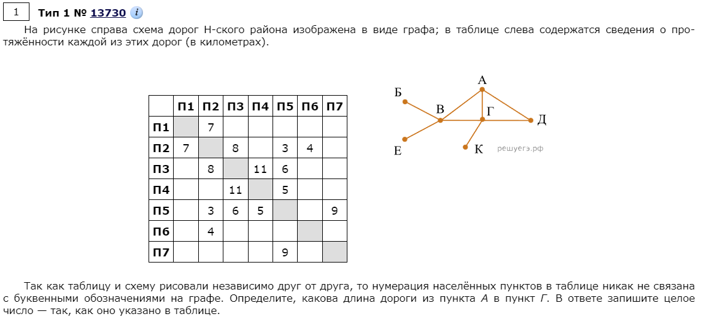
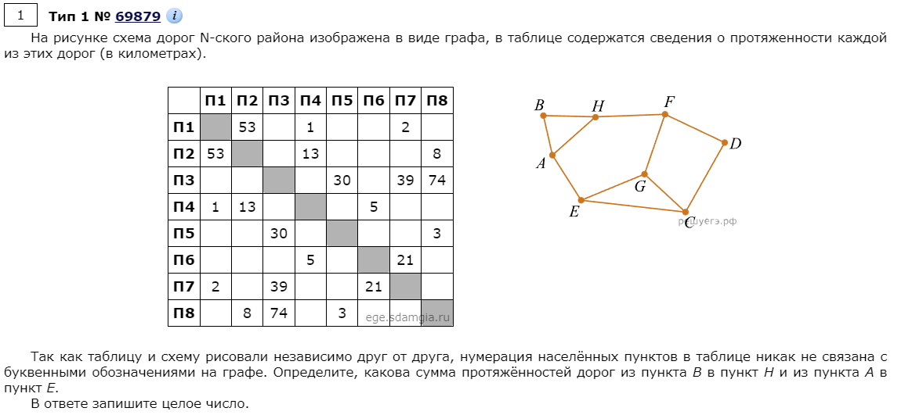
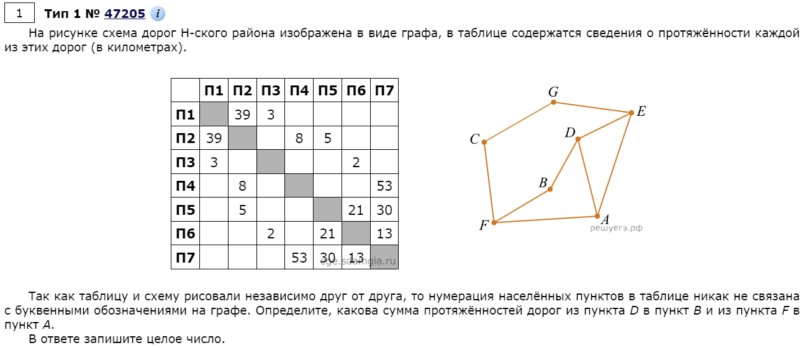
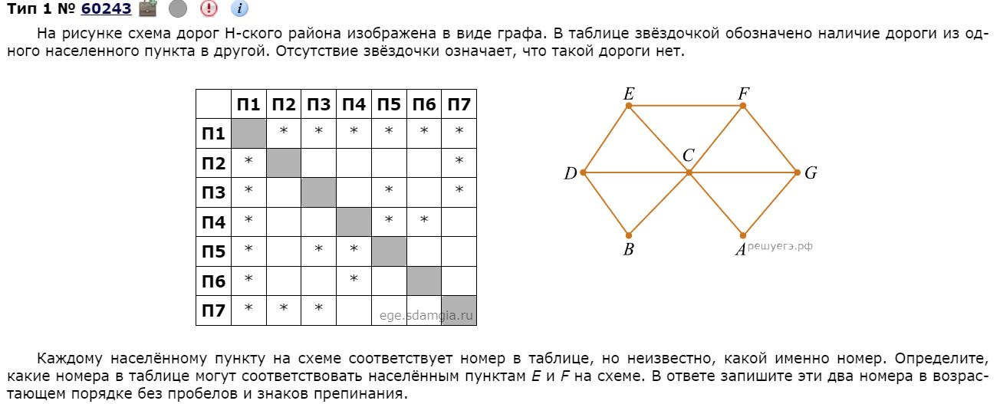
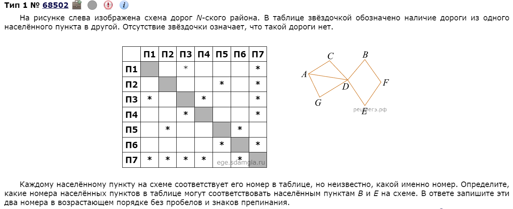
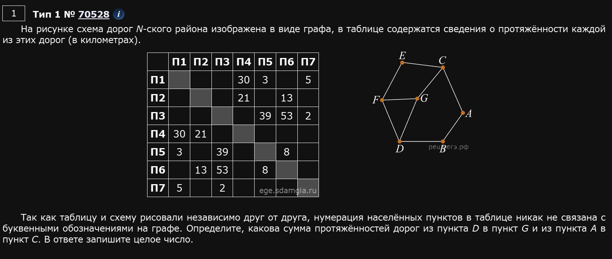

Задание представляет из себя анализ таблицы с графом. Т.е. по таблице и графу надо определить где какие пункты, согласно графу, находятся в таблице и определить то, что требуется по заданию. Однако таблицы бывают двух видов - условно: со звездочками (неизвестными длинами путей) и без них. Сначала разберемся с теми заданиями, где указана длина пути (без звездочек в ячейках таблицы). В дальнейшем будет видно, что задания “со звездочками” даже, в каком-то смысле, проще.
Пример 1)

Для начала, нужно отметить степени вершин графа т.е. то, сколько путей выходит из каждой вершины. В данном случае:
| Название вершины | Степень |
|---|---|
| А | 3 |
| Б | 1 |
| В | 4 |
| Г | 4 |
| Д | 2 |
| Е | 1 |
| К | 1 |
Логика такая:
У вершины А и Д единственная степень, встречающаяся в таблице т.е. 3 и 2 соответственно (проще говоря, если из пункта ведет, например, 2 пути и он такой один, то соотнести его с таблицей из задания не сложно). Таким образом, сходу обнаруживаем, что П3 соответствует пункту А, а П4 соответствует пункту Д.
Далее, замечаем, что из пункта А выходит сразу 2 пути, ведущие в пункты, у которых, в свою очередь, по 4 пути. Один из них - пункт Г, это либо П2, либо П5. Предположим, что П5 (в случае, если предположение окажется неудачным, то мы просто возьмем второй вариант т.е. П2). Проверим: если П5 действительно пункт Г, то из него должен выходить только 1 путь, ведущий на пункт, у которого степень равна 1 (т.е. пункт К). Так и есть. А значит наше предположение верно.
Т.е. еще раз: мы выбираем П5, а не П2 потому, что из П5 есть путь ведущий в П7, а П7 - это степень вершины графа равная 1 (т.е. из П7 только 1 путь - в П5), причем такой путь, со степенью вершины равной 1 только 1, а не 2, как в П2. Значит П5 - это пункт Г, а П2 - это пункт В.
Возвращаемся к вопросу: нам нужно найти длину пути из А в Г. Т.е., судя по таблице, ответ 6.
Ответ: 6.
Пример 2)

| Название вершины | Степень |
|---|---|
| А | 3 |
| B | 2 |
| C | 3 |
| D | 2 |
| E | 3 |
| F | 3 |
| G | 3 |
| H | 3 |
Это более сложный случай т.к. сразу нельзя однозначно выделить какие-то пункты. Подметим, что вершины G и E - единственные вершины степени 3, не имеющие общих дорог с вершинами степени 2. Т.е. либо П1 - это G, а П2 - это E, либо наоборот. Причем вершина С имеет дорогу и с G и с E т.е. вершина С - это такой пункт, который касается и П1 и П2 одновременно. Единственный такой пункт - это П4 => П4 - это вершина С. Значит, вершина D - это пункт П6 т.к. имеет общую дорогу с С, при этом имея степень 2. Стало быть, вершина F - это пункт П7 т.к. из П6 выходит всего 2 пути и один из них - пункт П4 т.е. вершина С.
Т.е. сейчас мы знаем следующее:
П4 - С
П6 - D
П7 - F
П1 и П2 - G и Е
Из того, что П7 - это F, заключаем, что П3 - это H по тому же самому принципу, что и с вершиной D и пунктом П6 => G - это П1, а Е - это П2. Тогда В - это П5, а П8 - это вершина А.
Ура, мы нашли все вершины. Осталось посчитать ответ. 30 + 8 = 38.
Ответ: 38.
Пример 3)

| Название вершины | Степень |
|---|---|
| А | 3 |
| B | 2 |
| C | 2 |
| D | 3 |
| E | 3 |
| F | 3 |
| G | 2 |
| Решается приблизительно также, как и пример 2. B - единственная вершина, не связанная с другими степени 2. Значит вершина В - это П4. Вершина F - это единственная вершина степени 3, связанная с двумя вершинами степени 2 => F - это П2. Т.к. вершина В связана с F и D, то D - это П7. Вершина A - единственная вершина степени 3, связанная и с вершиной D, и с вершиной F. Следовательно, вершина A соответствует П5. |
Отсюда, ответ: 58.
Теперь рассмотрим другой тип заданий - когда не указана длина между дорогами, указан лишь факт наличия дороги между пунктами т.е. в таблице присутствуют звездочки.
Пример 4)

| Название вершины | Степень |
|---|---|
| А | 2 |
| B | 2 |
| C | 6 |
| D | 3 |
| E | 3 |
| F | 3 |
| G | 3 |
В общем-то мало что поменялось, учитывая вопрос задачи. Т.е. в таких заданиях алгоритм решения тот же.
Пункт C является единственным пунктом, из которого выходит 6 дорог, значит, П1 - это C. П2 и П6 - единственные пункты, содержащие две дороги, значит, П2 - это либо A, либо B, П6 — тоже либо A, либо B. Заметим, что схема симметричная, поэтому неважно, какой пункт мы примем за A, а какой - за B. Пусть П2 - , тогда П7 - G и П3 - . Значит, П6 - B, П4 - D и П5 - E. Таким образом, получим, что пунктам E и F соответствуют номера 5, 3 или 3, 5.
Пример 5)

| Название вершины | Степень |
|---|---|
| А | 3 |
| B | 2 |
| C | 2 |
| D | 5 |
| E | 2 |
| F | 2 |
| G | 2 |
На схеме имеется один населенный пункт степени 5, ему соответствует населенный пункт П7. Также есть только один населенный пункт степени 3, это пункт , и ему соответствует пункт П3. С населенным пунктом имеют общие дороги пункты степени 2, это и , им могут соответствовать пункты П4 или П1 (мы не знаем, какой пункт какому соответствует, но для решения это и не нужно). Пункт — единственный оставшийся населенный пункт степени 2, не имеющий общих дорог с пунктом (пункт _П7), ему соответствует пункт П5. Тогда населенным пунктам и могут соответствовать только пункты П2 и П6. Это и есть ответ. Записываем ответ в порядке возрастания без разделителей.
Решение кодом

from itertools import *
tab = '457 46 567 12 136 235 13'.split()
pic = 'ef ec fg cg fd dg db ab ac'.split()
print(*range(1,8))
for var in permutations('abcdefg'):
if all(str(var.index(x) + 1) in tab[var.index(y)] for x,y in pic):
print(*var)